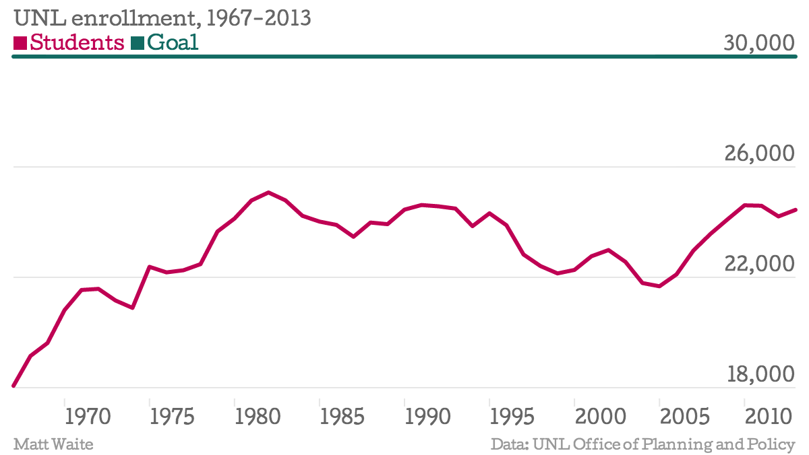
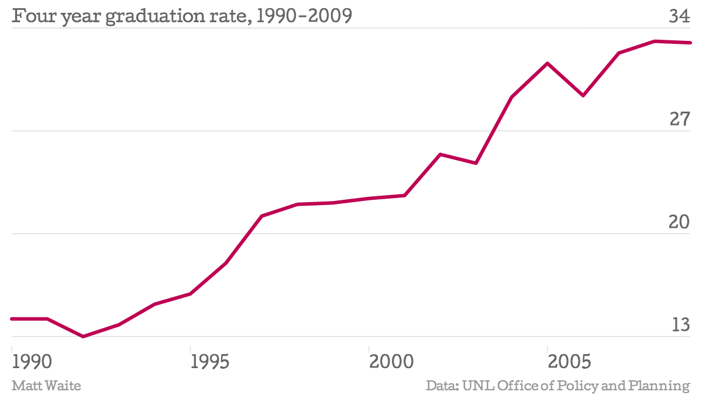

Harvey Perlman has to find 30,000 students
University of Nebraska-Lincoln Chancellor Harvey Perlman has set a goal to have 30,000 students by 2020. That means he's got to find almost 1,000 more students a year to come to UNL to reach the goal. The problem? Since 1967 -- when enrollments high because of the Vietnam War -- UNL has never been closer to the goal than 25,000 students. Since the 60s, enrollment at the university has fluctuated mostly between 22,000 and 24,000.
| Year | Total students | Undergradutates | Graduate students | Professional students |
|---|---|---|---|---|
| 1967 | 18067 | 14417 | 2631 | 1019 |
| 1968 | 19150 | 0 | 0 | 0 |
| 1969 | 19618 | 16023 | 2827 | 768 |
| 1970 | 20810 | 16884 | 3159 | 767 |
| 1971 | 21541 | 0 | 0 | 0 |
| 1972 | 21581 | 17844 | 3019 | 718 |
| 1973 | 21160 | 0 | 0 | 0 |
| 1974 | 20892 | 0 | 0 | 0 |
| 1975 | 22380 | 17840 | 3624 | 916 |
| 1976 | 22179 | 17936 | 3493 | 750 |
| 1977 | 22256 | 18026 | 3474 | 756 |
| 1978 | 22477 | 18141 | 3571 | 765 |
| 1979 | 23661 | 19703 | 3476 | 482 |
| 1980 | 24128 | 20127 | 3518 | 483 |
| 1981 | 24786 | 20587 | 3714 | 485 |
| 1982 | 25075 | 20799 | 3816 | 460 |
| 1983 | 24789 | 20471 | 3865 | 453 |
| 1984 | 24228 | 20083 | 3706 | 439 |
| 1985 | 24020 | 19911 | 3680 | 429 |
| 1986 | 23899 | 19720 | 3771 | 408 |
| 1987 | 23469 | 19309 | 3763 | 397 |
| 1988 | 23985 | 19755 | 3821 | 409 |
| 1989 | 23926 | 19791 | 3714 | 421 |
| 1990 | 24453 | 20082 | 3931 | 440 |
| 1991 | 24620 | 19884 | 4302 | 434 |
| 1992 | 24573 | 19746 | 4381 | 446 |
| 1993 | 24491 | 19625 | 4421 | 445 |
| 1994 | 23854 | 18700 | 4732 | 422 |
| 1995 | 24320 | 19186 | 4711 | 423 |
| 1996 | 23887 | 18954 | 4546 | 387 |
| 1997 | 22827 | 18246 | 4159 | 422 |
| 1998 | 22408 | 17980 | 3979 | 449 |
| 1999 | 22142 | 17804 | 3893 | 445 |
| 2000 | 22268 | 17968 | 3869 | 431 |
| 2001 | 22764 | 17985 | 4309 | 470 |
| 2002 | 22988 | 18118 | 4380 | 490 |
| 2003 | 22559 | 17851 | 4219 | 489 |
| 2004 | 21792 | 17137 | 4162 | 493 |
| 2005 | 21675 | 17037 | 4150 | 488 |
| 2006 | 22106 | 17371 | 4257 | 478 |
| 2007 | 22973 | 18053 | 4418 | 502 |
| 2008 | 23573 | 18526 | 4500 | 547 |
| 2009 | 24100 | 18955 | 4591 | 554 |
| 2010 | 24610 | 19383 | 4620 | 607 |
| 2011 | 24593 | 19345 | 4679 | 569 |
| 2012 | 24207 | 19103 | 4559 | 545 |
| 2013 | 24445 | 19376 | 4554 | 515 |
But there are positive signs
More students are graduating in four years
In 1990, few students graduated in four years. The number has nearly tripled since. However, UNL's six-year graduation rate -- the number most universities use -- ranks dead last in the Big 10.
| Year | Percent |
|---|---|
| 1990 | 14.2 |
| 1991 | 14.2 |
| 1992 | 13.0 |
| 1993 | 13.8 |
| 1994 | 15.2 |
| 1995 | 15.9 |
| 1996 | 18.0 |
| 1997 | 21.2 |
| 1998 | 22.0 |
| 1999 | 22.1 |
| 2000 | 22.4 |
| 2001 | 22.6 |
| 2002 | 25.4 |
| 2003 | 24.8 |
| 2004 | 29.3 |
| 2005 | 31.6 |
| 2006 | 29.4 |
| 2007 | 32.3 |
| 2008 | 33.1 |
| 2009 | 33.0 |
More students are sticking around
UNL has invested significantly in keeping students, particularly first year students, from dropping out. The thinking goes that the fewer students drop out, the more students will be around, increasing total enrollment. First-year retention is up from a low of 72 percent in 1993 to nearly 84 percent in 2012.

| Year | Percent |
|---|---|
| 1990 | 76.4 |
| 1991 | 76.7 |
| 1992 | 75.3 |
| 1993 | 71.8 |
| 1994 | 75.1 |
| 1995 | 74.1 |
| 1996 | 74.3 |
| 1997 | 79.5 |
| 1998 | 79.0 |
| 1999 | 80.8 |
| 2000 | 78.8 |
| 2001 | 80.8 |
| 2002 | 80.3 |
| 2003 | 82.1 |
| 2004 | 84.2 |
| 2005 | 84.4 |
| 2006 | 82.9 |
| 2007 | 83.5 |
| 2008 | 83.9 |
| 2009 | 84.4 |
| 2010 | 83.6 |
| 2011 | 84.0 |
| 2012 | 83.6 |